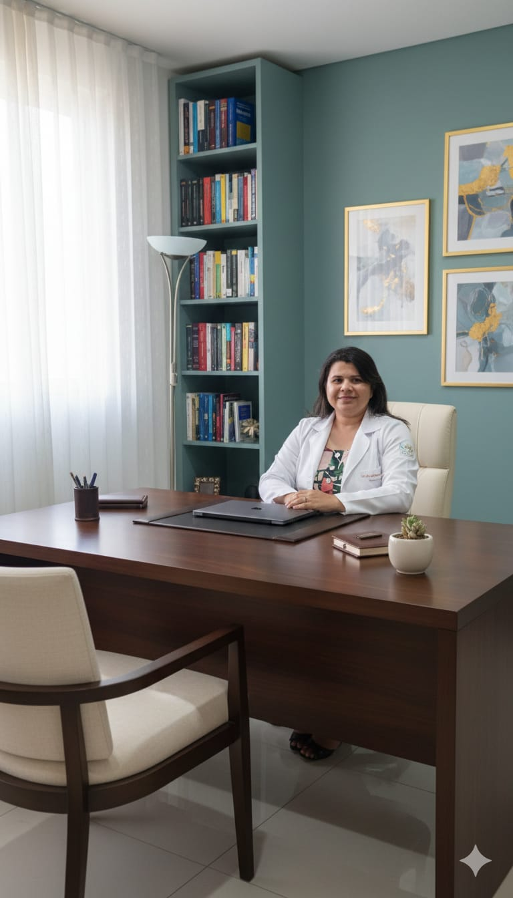

Acolhimento, escuta qualificada e acompanhamento psicológico para adultos e adolescentes que desejam aliviar a ansiedade, organizar pensamentos e construir uma vida com mais sentido.

Atendimento clínico individual para adultos e adolescentes.
Foco em ansiedade, depressão, relacionamentos, autoestima e questões emocionais do dia a dia.
CRP 20/10864 • Consultório em Manaus/AM • Atendimentos por videochamada para todo o Brasil.Um espaço seguro, sigiloso e acolhedor para falar sobre suas dores, reconhecer suas forças e ressignificar a sua história.
Olá, eu sou a Bruna Suellen Quintas de Souza, Psicóloga (CRP 20/10864), atuando com atendimento clínico presencial em Manaus/AM e atendimento online para todo o Brasil.
Meu trabalho é voltado principalmente para adultos e adolescentes que enfrentam ansiedade, tristeza profunda, conflitos nos relacionamentos, baixa autoestima e dificuldades emocionais que impactam a rotina.
A psicoterapia é um caminho de autoconhecimento e cuidado. Em um ambiente ético e sem julgamentos, busco ajudar você a compreender suas emoções, reconhecer padrões de comportamento e construir novas formas de se relacionar consigo e com o mundo.
Atendimentos online e presenciais, com a mesma seriedade, sigilo e cuidado. Você escolhe o formato que melhor se adapta à sua rotina.
As sessões online são realizadas por videochamada, em plataformas seguras e de fácil acesso (Google Meet, Zoom ou WhatsApp Vídeo, conforme sua preferência).
O consultório fica localizado em Manaus/AM, em ambiente reservado e acolhedor, preparado para que você se sinta à vontade para falar sobre suas questões com tranquilidade.
A psicoterapia não é um processo mágico, mas é um caminho potente de transformação. Ao longo das sessões, é possível:
Se você sente que precisa de ajuda para organizar suas emoções, aliviar a ansiedade ou ressignificar experiências difíceis, a psicoterapia pode ser um passo importante.
💬 Falar com a Psicóloga pelo WhatsApp